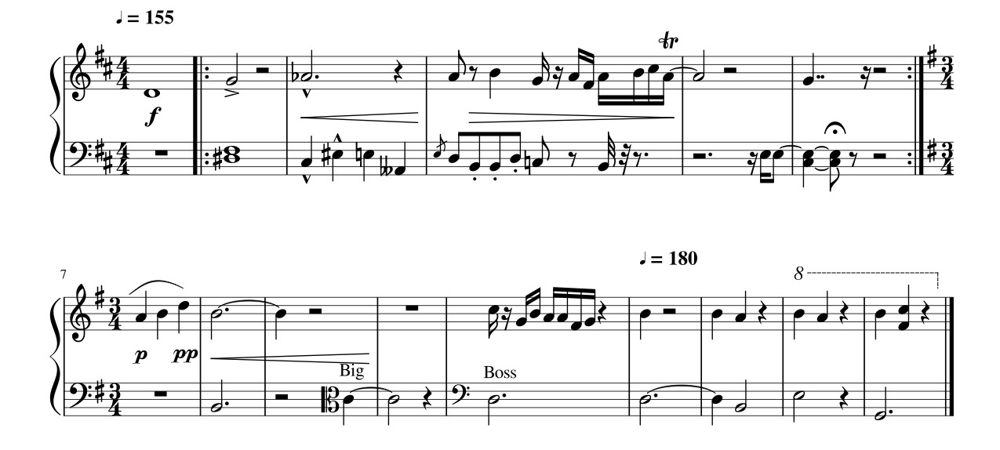

A gesture based music notation editor, built one lesson at a time
This site follows Marlin Eller's course Intermediate Java step by step, in JavaScript. Every lesson has the working program from that point in the course, running in your browser, and the finished editor is the last one.

The course in eight chapters
What the course is about
Marlin Eller wrote the course to show intermediate programmers what a mid-sized project looks like: not one class but thirty, organized well enough that you can find your way around. The project is a music notation editor with an unusual interface. There are no menus or buttons. You draw a stroke, the stroke is recognized as one of a small set of easy-to-draw compass gestures, and then every mark already on the page gets to bid on that stroke. The closest fit wins and acts. He calls this the Reaction Architecture, and it is really a two dimensional parser.
The course was written in Java with Swing. This port keeps the same classes, the same names and the same order of construction, so you can read the original text and this code side by side. Where JavaScript changes something, the lesson says so.
Running it yourself
git clone https://github.com/larsbrubaker/music-editor cd music-editor bun dev # http://localhost:3000/ with live reload npm test # the headless test suite (node --test)
There is no build step: the repository is the site.